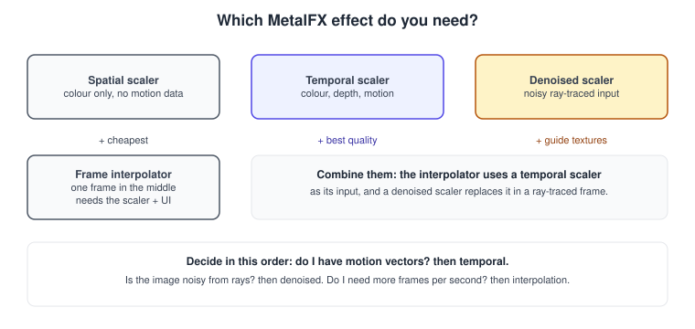
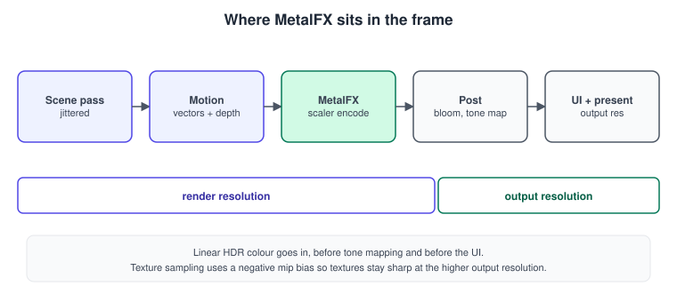
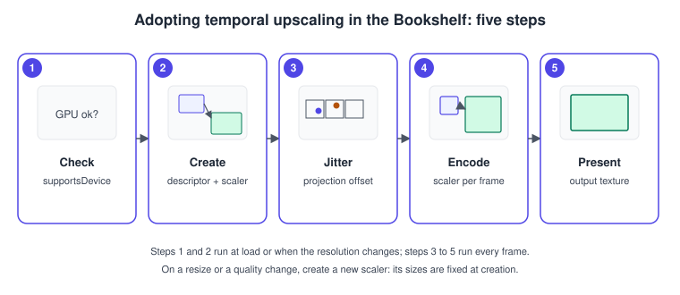
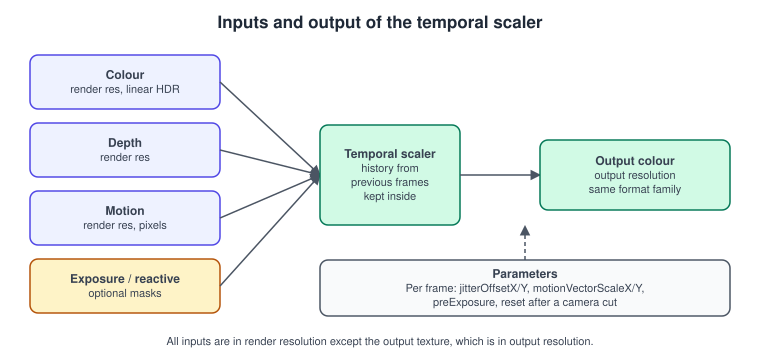
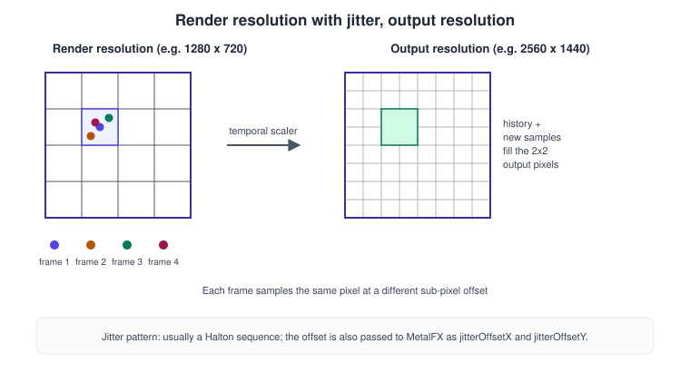
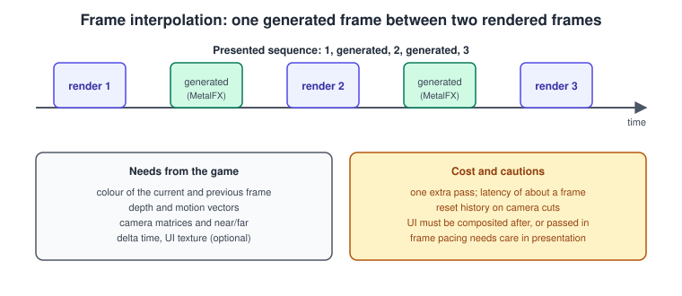
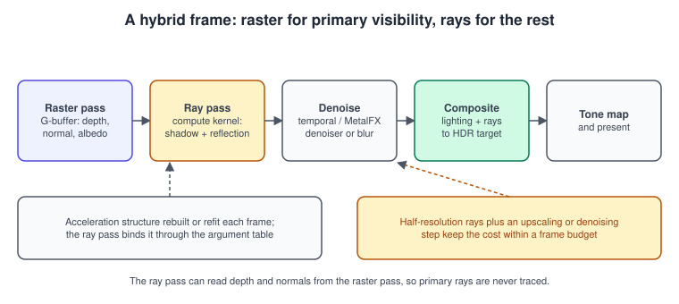

MetalFX: Upscaling, Frame Interpolation and Denoising
|
This content was generated with the assistance of AI and should be verified against the official documentation before being relied on in production. |
Rendering fewer pixels and reconstructing the rest is the most effective performance tool on modern GPUs. A frame at 1280 by 720 costs about a quarter of the same frame at 2560 by 1440, and a good reconstruction makes the result look like the larger frame. MetalFX is Apple’s framework for this: it ships spatial and temporal upscalers, a frame interpolator that generates extra frames, a denoised scaler for ray-traced content, and, since WWDC26, a redesigned temporal upscaler that uses neural networks. They all work on Metal textures you already have, and they run on the GPU timeline of your own command buffer.
The facts were checked in November 2026. The versions documented are Metal 4 on the 26 operating systems and Metal Shading Language 4.1 on the 27 operating systems (Xcode 27). The spatial and temporal scalers are available since iOS 16 and macOS 13; the frame interpolator and the Metal 4 types (MTL4FXSpatialScaler, MTL4FXTemporalScaler, MTL4FXFrameInterpolator, MTL4FXTemporalDenoisedScaler) are available from the 26 operating systems; the denoised scaler descriptor is documented for macOS 26 and later (check the page of each symbol for the exact platforms). Support depends on the GPU, so every effect has a supportsDevice(_:) class method that you check before creating it; the Metal 4 variants have supportsMetal4FX(_:). The Metal Bookshelf on visionOS uses the compositor, so the discussion here is about the 2D app targets (see Metal on visionOS).
In the running example this page is the MetalFX temporal upscaling stage: the ray-traced reflections of Ray Tracing in Metal and the lit, shadowed scene are rendered at a lower resolution and brought to the display resolution. The frame is the one assembled in MetalKit, MTKView and SwiftUI, and the HDR output chain is in Image-Based Lighting and HDR. The same ideas as general concepts are in Transparency, Blending and Post-Processing and Performance and Profiling.
Choosing an effect

| Effect | Inputs you provide | Strengths | Limits |
|---|---|---|---|
Spatial scaler ( |
The colour texture only |
No engine changes: no jitter, no motion vectors. Cheap. Good for UI-heavy or retro content and a first experiment |
Reconstructs from a single frame, so it cannot recover detail that was never rendered; thin lines and text soften |
Temporal scaler ( |
Colour, depth, motion vectors, a jittered camera, optional exposure and reactive mask |
The best image quality; also performs anti-aliasing |
Needs jitter and motion vectors; wrong inputs cause ghosting |
Frame interpolator ( |
A temporal scaler, depth, motion, camera matrices, delta time, optional UI and distortion textures |
Increases the presented frame rate |
Adds latency of about one frame and an extra pass; needs correct pacing |
Denoised scaler ( |
Everything of the temporal scaler plus normals, albedo, roughness and optional hit-distance textures |
Cleans up noisy ray-traced shadows and reflections while upscaling |
Needs the guide textures from the raster pass |
The documentation’s own guidance is simple: choose the temporal scaler when you can supply colour, depth and motion data, and the spatial scaler otherwise because it needs only colour. Start there.
Where the effect sits in the frame

The scene, its depth and its motion vectors are rendered at render resolution. MetalFX writes an output-resolution colour texture. Everything after it, bloom, tone mapping, film grain and above all the UI and text, runs at output resolution so that it stays sharp. The scaler expects linear colour before tone mapping; feeding it already tone-mapped or UI-composited content reduces quality. The colorTextureFormat and outputTextureFormat of the descriptor must match the real textures, and rgba16Float is the usual choice for an HDR pipeline.
Adopting upscaling, step by step

-
Check support with
supportsDevice(_:)(andsupportsMetal4FX(_:)for the Metal 4 path). Keep the native-resolution path as the fallback. -
Create the scaler from a descriptor with the render size and the output size. Both are fixed once the scaler exists; when the window changes size, create a new one.
-
Jitter the projection matrix every frame and report the offset to MetalFX.
-
Encode the scaler after the scene pass, giving it the textures and the per-frame values.
-
Continue the frame with the output texture instead of the render-resolution colour.
The spatial scaler
The spatial scaler is the smallest possible integration:
import Metal
import MetalFX
final class SpatialUpscaler {
private let scaler: MTLFXSpatialScaler
let outputTexture: MTLTexture
init?(device: MTLDevice, renderSize: MTLSize, outputSize: MTLSize,
colorFormat: MTLPixelFormat = .rgba16Float) {
guard MTLFXSpatialScalerDescriptor.supportsDevice(device) else { return nil }
let descriptor = MTLFXSpatialScalerDescriptor()
descriptor.inputWidth = renderSize.width
descriptor.inputHeight = renderSize.height
descriptor.outputWidth = outputSize.width
descriptor.outputHeight = outputSize.height
descriptor.colorTextureFormat = colorFormat
descriptor.outputTextureFormat = colorFormat
descriptor.colorProcessingMode = .linear // or .perceptual / .hdr for other content
guard let scaler = descriptor.makeSpatialScaler(device: device) else { return nil }
self.scaler = scaler
// The scaler reports the minimum usage its output texture needs.
let outputDescriptor = MTLTextureDescriptor.texture2DDescriptor(
pixelFormat: colorFormat, width: outputSize.width, height: outputSize.height, mipmapped: false)
outputDescriptor.usage = scaler.outputTextureUsage.union([.shaderRead])
outputDescriptor.storageMode = .private
guard let output = device.makeTexture(descriptor: outputDescriptor) else { return nil }
output.label = "MetalFX spatial output"
outputTexture = output
}
/// Texture usage the render-resolution colour texture must include.
var requiredColorUsage: MTLTextureUsage { scaler.colorTextureUsage }
func encode(color: MTLTexture, contentSize: MTLSize? = nil, into commandBuffer: MTLCommandBuffer) {
scaler.colorTexture = color
scaler.outputTexture = outputTexture
scaler.inputContentWidth = contentSize?.width ?? color.width
scaler.inputContentHeight = contentSize?.height ?? color.height
scaler.encode(commandBuffer: commandBuffer)
}
}Source: MTLFXSpatialScalerDescriptor and MTLFXSpatialScalerBase
colorProcessingMode tells the scaler how to interpret the input values: linear light, perceptually encoded (for example sRGB-encoded) or HDR. Pick the one that matches the texture; a wrong mode gives a slightly wrong contrast rather than an error. inputContentWidth and inputContentHeight select the part of the colour texture that holds real content, which is how you do dynamic resolution without recreating the scaler (the scale still has to stay inside the limits the scaler supports).
The temporal scaler

A temporal upscaler reconstructs a pixel from many frames. Each frame the camera is shifted by a tiny sub-pixel offset, so the same pixel samples a slightly different point of the scene. The scaler keeps a history, reprojects it with the motion vectors to follow moving objects, and blends the new samples into it. After a few frames the output holds more information than any single low-resolution frame.

The five things you must provide, and the mistakes each one causes:
| Input | What it is | If it is wrong |
|---|---|---|
Jitter |
A different sub-pixel offset every frame, from a low-discrepancy sequence such as Halton(2,3), applied to the projection matrix and reported with |
The image shimmers, or edges stay jagged: the offset sent to MetalFX differs from the offset applied, usually in sign or scale (clip space has y up, texture space has y down) |
Motion vectors |
Per pixel screen-space movement of the surface since the previous frame, at render resolution, in a two-channel texture such as |
Ghost trails behind moving objects: the sign is reversed (flip the scale), or the vectors were computed from jittered positions and not unjittered ones |
Depth |
The depth texture of the render pass; |
Blur or breakups at silhouettes, especially with reverse-Z |
Exposure |
|
Brightness pulsing during exposure changes |
Reset |
|
Old content bleeds into the new scene |
Optional inputs: a reactive mask (isReactiveMaskTextureEnabled and reactiveMaskTexture) that marks pixels that change faster than motion vectors can explain, such as particles, transparent effects and animated textures; isInputContentPropertiesEnabled with inputContentMinScale and inputContentMaxScale for dynamic resolution; isJitteredMotionVectorsEnabled if your vectors contain the jitter; and isOutputResolutionMotionVectorsEnabled if your motion vectors are at output resolution.
MSL: jitter and motion vectors
#include <metal_stdlib>
using namespace metal;
struct FrameUniforms {
float4x4 viewProjection; // jittered, current frame
float4x4 viewProjectionNoJitter; // current frame without jitter
float4x4 previousViewProjectionNoJitter;
float4x4 model;
float4x4 previousModel; // model matrix of the previous frame (animated books)
};
struct SceneVertexIn {
float3 position [[attribute(0)]];
float3 normal [[attribute(1)]];
float2 uv [[attribute(2)]];
};
struct SceneVertexOut {
float4 position [[position]]; // jittered: what the rasteriser uses
float4 currentClip; // unjittered clip position, current frame
float4 previousClip; // unjittered clip position, previous frame
float3 normal;
float2 uv;
};
vertex SceneVertexOut scene_vertex(SceneVertexIn in [[stage_in]],
constant FrameUniforms& frame [[buffer(1)]])
{
SceneVertexOut out;
float4 world = frame.model * float4(in.position, 1.0);
float4 previousWorld = frame.previousModel * float4(in.position, 1.0);
out.position = frame.viewProjection * world;
out.currentClip = frame.viewProjectionNoJitter * world;
out.previousClip = frame.previousViewProjectionNoJitter * previousWorld;
out.normal = (frame.model * float4(in.normal, 0.0)).xyz;
out.uv = in.uv;
return out;
}
struct SceneFragmentOut {
float4 color [[color(0)]];
float2 motion [[color(1)]]; // render-resolution pixels
};
fragment SceneFragmentOut scene_fragment(SceneVertexOut in [[stage_in]],
constant float2& renderSize [[buffer(0)]],
texture2d<float> albedo [[texture(0)]])
{
constexpr sampler s(filter::linear, mip_filter::linear, address::repeat);
SceneFragmentOut out;
out.color = float4(albedo.sample(s, in.uv).rgb, 1.0); // shading omitted
// Screen-space positions in pixels, y down, from unjittered clip positions.
float2 current = (in.currentClip.xy / in.currentClip.w) * float2(0.5, -0.5) + 0.5;
float2 previous = (in.previousClip.xy / in.previousClip.w) * float2(0.5, -0.5) + 0.5;
out.motion = (previous - current) * renderSize;
return out;
}Source: MTLFXTemporalScalerBase
Notes:
-
Motion vectors are computed from unjittered projections: if the jitter were included, every static surface would appear to move by the jitter amount.
-
The vertex function receives the previous model matrix, which is what makes animated objects (a falling book in the game) and the camera both produce correct vectors. Skinned or procedurally animated geometry needs the previous-frame positions as well.
-
The sign convention here is "where the surface was, minus where it is". If the Metal documentation or the sample for your OS uses the opposite direction, set
motionVectorScaleXandmotionVectorScaleYto -1 rather than editing the shader. Ghost trails that point the wrong way are the sign of a reversed vector. -
The fragment output writes the motion into the second colour attachment, a
rg16Floattarget of the same size as the colour target. A skybox or full-screen background must also write vectors (zero for a static camera, derived from the camera delta otherwise).
Swift: the temporal scaler
import Metal
import MetalFX
import simd
/// Halton sequence in base `b`, index starting at 1: values in (0, 1).
func halton(index: Int, base: Int) -> Float {
var f: Float = 1, r: Float = 0
var i = index
while i > 0 {
f /= Float(base)
r += f * Float(i % base)
i /= base
}
return r
}
final class TemporalUpscaler {
let renderSize: MTLSize
let outputSize: MTLSize
private let scaler: MTLFXTemporalScaler
let outputTexture: MTLTexture
private var frameIndex = 0
private let phaseCount = 16
/// Sub-pixel jitter of the current frame, in pixels of the render resolution, -0.5 ... 0.5.
private(set) var jitter = SIMD2<Float>(0, 0)
init?(device: MTLDevice, renderSize: MTLSize, outputSize: MTLSize,
colorFormat: MTLPixelFormat = .rgba16Float,
depthFormat: MTLPixelFormat = .depth32Float,
motionFormat: MTLPixelFormat = .rg16Float) {
guard MTLFXTemporalScalerDescriptor.supportsDevice(device) else { return nil }
self.renderSize = renderSize
self.outputSize = outputSize
let descriptor = MTLFXTemporalScalerDescriptor()
descriptor.inputWidth = renderSize.width
descriptor.inputHeight = renderSize.height
descriptor.outputWidth = outputSize.width
descriptor.outputHeight = outputSize.height
descriptor.colorTextureFormat = colorFormat
descriptor.depthTextureFormat = depthFormat
descriptor.motionTextureFormat = motionFormat
descriptor.outputTextureFormat = colorFormat
descriptor.isAutoExposureEnabled = true // let MetalFX measure the exposure
guard let scaler = descriptor.makeTemporalScaler(device: device) else { return nil }
scaler.isDepthReversed = false
scaler.motionVectorScaleX = 1
scaler.motionVectorScaleY = 1
self.scaler = scaler
let outputDescriptor = MTLTextureDescriptor.texture2DDescriptor(
pixelFormat: colorFormat, width: outputSize.width, height: outputSize.height, mipmapped: false)
outputDescriptor.usage = scaler.outputTextureUsage.union([.shaderRead])
outputDescriptor.storageMode = .private
guard let output = device.makeTexture(descriptor: outputDescriptor) else { return nil }
output.label = "MetalFX temporal output"
outputTexture = output
}
// Usage bits the render targets must carry so MetalFX can read them.
var colorUsage: MTLTextureUsage { scaler.colorTextureUsage.union(.renderTarget) }
var depthUsage: MTLTextureUsage { scaler.depthTextureUsage.union(.renderTarget) }
var motionUsage: MTLTextureUsage { scaler.motionTextureUsage.union(.renderTarget) }
/// Call once at the start of every frame; returns the offset to apply to the projection.
func nextJitter() -> SIMD2<Float> {
frameIndex = (frameIndex + 1) % phaseCount
jitter = SIMD2(halton(index: frameIndex + 1, base: 2) - 0.5,
halton(index: frameIndex + 1, base: 3) - 0.5)
return jitter
}
/// Clip-space offset for a render size: add it to the projection's third column x and y.
func projectionJitter() -> SIMD2<Float> {
SIMD2(2 * jitter.x / Float(renderSize.width), -2 * jitter.y / Float(renderSize.height))
}
func encode(color: MTLTexture, depth: MTLTexture, motion: MTLTexture,
resetHistory: Bool, into commandBuffer: MTLCommandBuffer) {
scaler.colorTexture = color
scaler.depthTexture = depth
scaler.motionTexture = motion
scaler.outputTexture = outputTexture
scaler.inputContentWidth = renderSize.width
scaler.inputContentHeight = renderSize.height
scaler.jitterOffsetX = jitter.x
scaler.jitterOffsetY = jitter.y
scaler.preExposure = 1.0
scaler.reset = resetHistory
scaler.encode(commandBuffer: commandBuffer)
}
}
/// Applies the clip-space jitter to a projection matrix.
func jitteredProjection(_ projection: simd_float4x4, offset: SIMD2<Float>) -> simd_float4x4 {
var p = projection
p.columns.2.x += offset.x
p.columns.2.y += offset.y
return p
}Source: MTLFXTemporalScalerDescriptor and MTLFXTemporalScalerBase
How the frame uses it:
// In the draw(in:) of the renderer.
let jitterOffset = upscaler.nextJitter()
let clipJitter = upscaler.projectionJitter()
frame.viewProjection = jitteredProjection(projection, offset: clipJitter) * view
frame.viewProjectionNoJitter = projection * view
// 1. Scene pass into render-resolution color, depth and motion textures.
encodeScenePass(commandBuffer, color: sceneColor, depth: sceneDepth, motion: sceneMotion)
// 2. MetalFX.
upscaler.encode(color: sceneColor, depth: sceneDepth, motion: sceneMotion,
resetHistory: cameraJustTeleported, into: commandBuffer)
// 3. Post-processing and presentation at output resolution, reading upscaler.outputTexture.
encodePostProcess(commandBuffer, source: upscaler.outputTexture, destination: drawable.texture)Source: MTLFXTemporalScalerDescriptor
Choices and options:
-
Jitter in pixels and in clip space. MetalFX takes the offset in render-resolution pixels. The projection needs the same shift in clip space (2 divided by the size, because clip space is two units wide), with y flipped because clip space points up and texture space points down. If the two disagree, the image shimmers.
-
Texture mip bias. A jittered, upscaled image should sample material textures at the sharpness of the output resolution. Add a negative LOD bias of about the base-2 logarithm of the render-to-output ratio (for 2x upscaling about -1) to the sampler of material textures; see Textures and Samplers.
-
Dynamic resolution. Create the scaler with
isInputContentPropertiesEnabled = true, setinputContentMinScaleandinputContentMaxScale(the supported range comes fromsupportedInputContentMinScale(device:)andsupportedInputContentMaxScale(device:)), render into the top-left region of a maximum-size texture and setinputContentWidthandinputContentHeighteach frame. The WWDC26 notes also mention subrectangle processing for dynamic resolution in the latest MetalFX framework. -
Reactive mask. A single-channel texture, written in the scene pass, with higher values where the image changes faster than the vectors can describe (the dust particles of the Bookshelf, the lamp flicker). The mask tells the scaler to trust history less in those pixels.
-
Synchronous initialisation. Creating a scaler can take noticeable time; set
requiresSynchronousInitializationonly when you must have it ready on the next line, otherwise create scalers at load and when settings change, not in the middle of a frame. -
Quality presets. Offer render scales such as 100 percent (native, no upscaling), 77 percent, 67 percent, 50 percent. The scaler supports a range of scale factors; query it with the
supportedInputContentMinScaleandsupportedInputContentMaxScaleclass methods and clamp the setting.
Metal 4
On the Metal 4 path the descriptor creates scalers with the compiler, makeTemporalScaler(device:compiler:), which returns an MTL4FXTemporalScaler, and the scaler adds its pass to a Metal 4 command buffer with encode(commandBuffer:) taking an MTL4CommandBuffer. The properties, the descriptor and the per-frame values are the same as above (the Metal 4 scaler inherits MTLFXTemporalScalerBase). Query supportsMetal4FX(_:) before choosing the path. The spatial and denoised scalers have the same pair of factory methods.
func makeMetal4Scaler(descriptor: MTLFXTemporalScalerDescriptor,
device: MTLDevice, compiler: MTL4Compiler) -> MTL4FXTemporalScaler? {
guard MTLFXTemporalScalerDescriptor.supportsMetal4FX(device) else { return nil }
return descriptor.makeTemporalScaler(device: device, compiler: compiler)
}
func encode(scaler: MTL4FXTemporalScaler, commandBuffer: MTL4CommandBuffer) {
// Inputs and output are set on the scaler exactly as for the Metal 3 scaler.
scaler.encode(commandBuffer: commandBuffer)
}Source: MTL4FXTemporalScaler
Because the Metal 4 command buffer is not tracked automatically, the textures that the scaler reads must be written before it runs: put the consumer barrier between the scene pass and the scaler as described in Synchronization and Barriers, and make the textures resident through the residency set of the queue.
Frame interpolation

Frame interpolation, available from the 26 operating systems, produces an additional frame between two rendered ones. If the game renders at 40 frames per second and the display runs at 80, every other presented frame is generated. The interpolator uses the colour, depth and motion of the current frame, the previous colour, the camera matrices and the time between frames to predict the in-between image, including the effect of the camera movement.
It does not stand alone. The descriptor takes a scaler (MTLFXFrameInterpolatableScaler, which the temporal scalers conform to) and runs it as part of the interpolation:
import Metal
import MetalFX
import simd
final class FrameGenerator {
private let interpolator: MTLFXFrameInterpolator
let outputTexture: MTLTexture
init?(device: MTLDevice, scaler: MTLFXFrameInterpolatableScaler,
renderSize: MTLSize, outputSize: MTLSize,
colorFormat: MTLPixelFormat = .rgba16Float,
depthFormat: MTLPixelFormat = .depth32Float,
motionFormat: MTLPixelFormat = .rg16Float,
uiFormat: MTLPixelFormat = .rgba8Unorm) {
guard MTLFXFrameInterpolatorDescriptor.supportsDevice(device) else { return nil }
let descriptor = MTLFXFrameInterpolatorDescriptor()
descriptor.scaler = scaler
descriptor.inputWidth = renderSize.width
descriptor.inputHeight = renderSize.height
descriptor.outputWidth = outputSize.width
descriptor.outputHeight = outputSize.height
descriptor.colorTextureFormat = colorFormat
descriptor.depthTextureFormat = depthFormat
descriptor.motionTextureFormat = motionFormat
descriptor.outputTextureFormat = colorFormat
descriptor.uiTextureFormat = uiFormat // custom UI rendered separately
guard let interpolator = descriptor.makeFrameInterpolator(device: device) else { return nil }
self.interpolator = interpolator
let textureDescriptor = MTLTextureDescriptor.texture2DDescriptor(
pixelFormat: colorFormat, width: outputSize.width, height: outputSize.height, mipmapped: false)
textureDescriptor.usage = interpolator.outputTextureUsage.union([.shaderRead])
textureDescriptor.storageMode = .private
guard let output = device.makeTexture(descriptor: textureDescriptor) else { return nil }
output.label = "MetalFX interpolated frame"
outputTexture = output
}
func encode(color: MTLTexture, previousColor: MTLTexture?, depth: MTLTexture, motion: MTLTexture,
ui: MTLTexture?, deltaTime: Float,
worldToView: simd_float4x4, viewToClip: simd_float4x4,
nearPlane: Float, farPlane: Float, verticalFieldOfViewDegrees: Float, aspectRatio: Float,
jitter: SIMD2<Float>, resetHistory: Bool, into commandBuffer: MTLCommandBuffer) {
interpolator.colorTexture = color
interpolator.prevColorTexture = previousColor
interpolator.depthTexture = depth
interpolator.motionTexture = motion
interpolator.uiTexture = ui
interpolator.isUITextureComposited = false // UI is passed separately, not baked in
interpolator.outputTexture = outputTexture
interpolator.deltaTime = deltaTime
interpolator.worldToViewMatrix = worldToView
interpolator.viewToClipMatrix = viewToClip
interpolator.nearPlane = nearPlane
interpolator.farPlane = farPlane
interpolator.fieldOfView = verticalFieldOfViewDegrees
interpolator.aspectRatio = aspectRatio
interpolator.jitterOffsetX = jitter.x
interpolator.jitterOffsetY = jitter.y
interpolator.shouldResetHistory = resetHistory
interpolator.encode(commandBuffer: commandBuffer)
}
}Things to know:
-
The interpolator needs
prevColorTexturewhen the descriptor’srequiresPrevColorTextureis true; otherwise it remembers it. Setdescriptor.isDistortionTextureEnabledanddistortionTexturefor lens distortion in the output (VR-style barrel distortion correction). -
UI. A user interface that is composited into the colour before interpolation is interpolated too, and its text smears. Render the UI into a separate texture and pass it as
uiTexture, or setisUITextureCompositedto true only when the colour already contains it. -
Pacing. The generated frame and the rendered frame must be presented at even intervals (see Game Loop and Frame Timing). With
CAMetalDisplayLinkyou receive each display refresh and decide whether to present a rendered or an interpolated frame, keeping the two evenly spaced. -
Latency. Interpolation needs the next real frame, so latency grows by about one rendered frame; competitive and fast-twitch games may prefer to spend the budget on a higher native frame rate.
-
Reset the history after cuts, as for the scaler.
Denoising ray-traced frames

Ray-traced shadows and reflections of soft lights or rough surfaces are noisy because each pixel has only a few rays. MTLFXTemporalDenoisedScaler accumulates the noisy colour over time like the temporal scaler and additionally uses guide textures to decide what to blur and what to preserve. Its descriptor lists the textures it can use, each with a format property and, for the optional ones, an enable flag:
| Texture | Notes |
|---|---|
|
The noisy, lit colour at render resolution. |
|
Same as the temporal scaler. |
|
World or view-space normals. |
|
Material colours, so the denoiser separates lighting from texture detail. |
|
Surface roughness. |
|
Optional: distance to the reflected hit ( |
|
Optional masks ( |
func makeDenoiser(device: MTLDevice, renderSize: MTLSize, outputSize: MTLSize)
-> MTLFXTemporalDenoisedScaler? {
guard MTLFXTemporalDenoisedScalerDescriptor.supportsDevice(device) else { return nil }
let descriptor = MTLFXTemporalDenoisedScalerDescriptor()
descriptor.inputWidth = renderSize.width
descriptor.inputHeight = renderSize.height
descriptor.outputWidth = outputSize.width
descriptor.outputHeight = outputSize.height
descriptor.colorTextureFormat = .rgba16Float
descriptor.depthTextureFormat = .depth32Float
descriptor.motionTextureFormat = .rg16Float
descriptor.normalTextureFormat = .rgba16Float
descriptor.diffuseAlbedoTextureFormat = .rgba8Unorm
descriptor.specularAlbedoTextureFormat = .rgba8Unorm
descriptor.roughnessTextureFormat = .r8Unorm
descriptor.outputTextureFormat = .rgba16Float
descriptor.isAutoExposureEnabled = true
descriptor.isReactiveMaskTextureEnabled = false
return descriptor.makeTemporalDenoisedScaler(device: device)
}
func bindGuides(_ scaler: MTLFXTemporalDenoisedScaler, gbuffer: GBuffer, frame: FrameState) {
scaler.colorTexture = gbuffer.noisyColor
scaler.depthTexture = gbuffer.depth
scaler.motionTexture = gbuffer.motion
scaler.normalTexture = gbuffer.normal
scaler.diffuseAlbedoTexture = gbuffer.diffuseAlbedo
scaler.specularAlbedoTexture = gbuffer.specularAlbedo
scaler.roughnessTexture = gbuffer.roughness
scaler.outputTexture = gbuffer.denoisedOutput
scaler.worldToViewMatrix = frame.worldToView
scaler.viewToClipMatrix = frame.viewToClip
scaler.jitterOffsetX = frame.jitter.x
scaler.jitterOffsetY = frame.jitter.y
scaler.shouldResetHistory = frame.cameraCut
}GBuffer and FrameState above are the app’s own structures holding the render targets and per-frame values of the hybrid pass in Ray Tracing in Metal. The pass that adds the denoiser pass to the command buffer follows the descriptor in the same way as the temporal scaler (see the page of MTLFXTemporalDenoisedScaler).
Neural upscaling
At WWDC26 Apple introduced a redesigned temporal upscaler that uses both the Neural Engine and, on M5 Pro and M5 Max, the Neural Accelerators in the GPU. According to Apple’s Metal pages, it reconstructs fine detail from significantly lower render resolutions, so a game can keep a high frame rate at higher-quality settings, and the latest MetalFX adds subrectangle processing for dynamic resolution, passing motion vectors directly to save preprocessing, and a way to handle post-process effects that distort the image through distortion fields. The practical consequences for an application:
-
Keep the inputs of the temporal scaler correct; a stronger reconstruction still cannot recover from wrong jitter or wrong motion vectors.
-
Query the supported scale range at runtime. Lower render resolutions become useful as the upscaler improves, but the range depends on the device and OS.
-
Evaluate the quality settings on the target devices instead of copying fixed percentages; the performance cost of the neural path is part of the budget.
Common mistakes and performance
-
Ghosting behind moving objects. The motion vectors are wrong in sign, units (pixels at render resolution) or contain the jitter. Visualise them as colour before tuning the scaler.
-
Shimmering textures. The texture LOD bias is not applied, or the jitter reported to MetalFX differs from the one applied.
-
Soft image after a camera cut.
resetwas not set, or was set every frame (which disables temporal accumulation). -
Blurry UI and text. The UI is rendered into the render-resolution target. Draw it at output resolution after MetalFX.
-
Wrong brightness. Tone mapping happens before the scaler, or
preExposureis inconsistent with the exposure of the frame. -
Transparent effects smear. Particles, glass and decals that do not write motion need a reactive mask or must be drawn after the scaler.
-
Cost. The scaler is a compute-heavy pass at output resolution. Measure it in the debugger and with Metal counters (see Debugging and Profiling) and compare the sum of cheaper rendering and the scaler against native rendering; on a lightly loaded scene the native frame may still be faster.
-
Textures for the scaler. Give input textures at least the usage bits reported by each
TextureUsage-suffixed property; missing bits fail validation. -
Creating scalers per frame. Creation is expensive; create when settings change, not every frame.
Where the books are outdated
| Source | Then and now |
|---|---|
Metal by Tutorials, 4th edition (introduction) |
MetalFX is mentioned as an upscaling feature. It now covers four techniques: spatial and temporal upscaling, frame interpolation and denoising, plus the redesigned neural temporal upscaler of WWDC26, with Metal 4 variants of each. |
Metal by Tutorials and Metal Programming Guide |
Neither teaches jittered temporal reconstruction or motion vectors; the Metal Programming Guide (2017, Metal 2) predates MetalFX entirely (iOS 16 / macOS 13). |
Both books |
Their render loops use one |